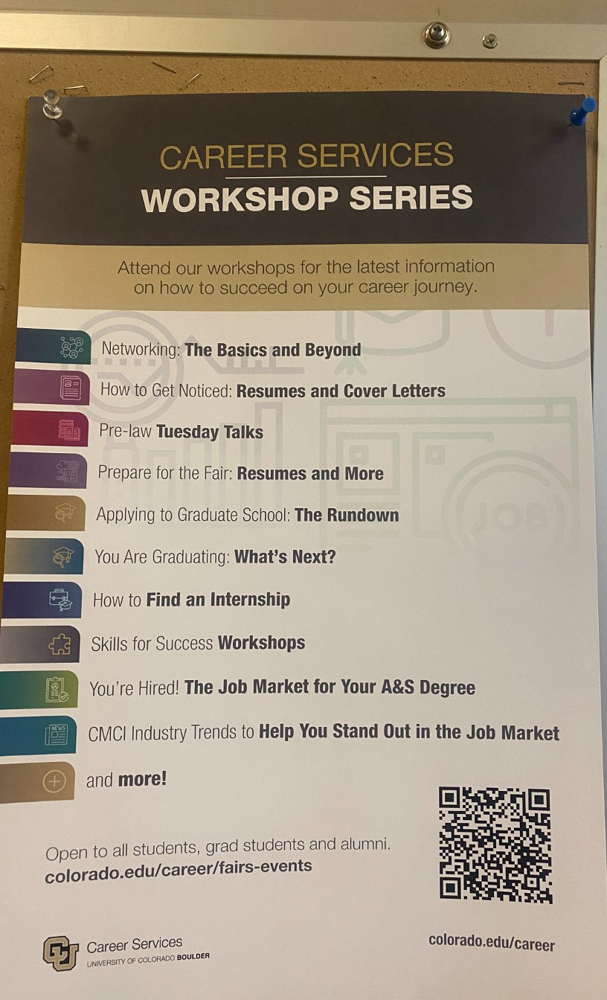
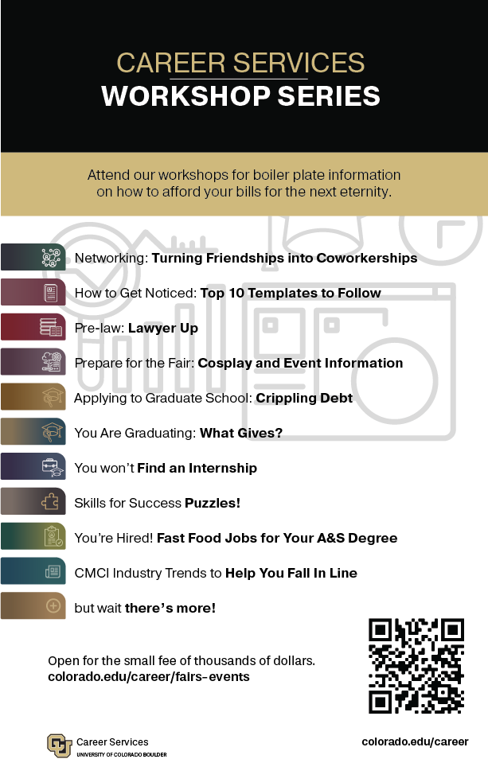

Ad Hack
Using Illustrator, and various font/color matching techniques I recreated and subverted a career fair ad on campus, putting my Adobe skills to the test to see if I could make an accurate replication of the original.


I found a piece of persuasive text on campus and used it as a basis for an ad hack. I started by recreating the poster as best I could, each element made from scratch based on how I thought the original designer had done it. I then changed some of the text and images to subvert the intended message.